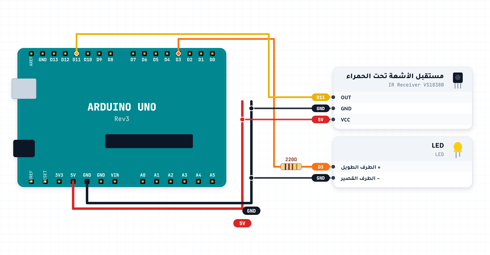

▶فيديو الشرح
نستقبل أوامر ريموت الأشعة تحت الحمراء ونشغّل الإضاءة أو نطفئها من مكانك.
1المكونات
ARDUINO UNOboardمستقبل الأشعة تحت الحمراءIR Receiver VS1838BLEDLEDأسلاك توصيلJumper Wiresلوحة تجاربBreadboard
2مخطط التوصيل

اضغط على المخطط لتكبيره · نسخة SVG عالية الدقة
| القطعة | الطرف | يوصل إلى |
|---|---|---|
| مستقبل الأشعة تحت الحمراء | OUT | D11 |
| مستقبل الأشعة تحت الحمراء | GND | GND |
| مستقبل الأشعة تحت الحمراء | VCC | 5V |
| LED | + الطرف الطويل | D3 عبر مقاومة 220Ω |
| LED | − الطرف القصير | GND |
3الكود
المكتبات المطلوبة (من Arduino IDE ← Sketch ← Include Library ← Manage Libraries):
- IRremote — الإصدار 4 أو أحدث
/* المشروع 10: التحكم في الإضاءة عن بُعد (IR Remote) كتاب: 38 مشروع في شهر — لؤي النصري (@robotlouay) المكتبة: IRremote (الإصدار 4 أو أحدث) — Sketch > Include Library > Manage Libraries التوصيل (مستقبل VS1838B / KY-022): OUT → Pin 11 GND → GND VCC → 5V LED ← 220Ω ← Pin 3 الخطوة 1: ارفع الكود وافتح Serial Monitor، واضغط أزرار الريموت لترى أكوادها. الخطوة 2: ضع الأكواد في BTN_ON و BTN_OFF و BTN_TOGGLE ثم ارفع الكود من جديد. */ #include <IRremote.hpp> const int IR_PIN = 11; const int LED_PIN = 3; // أكواد ريموت الكيت الشائع (NEC) — غيّرها حسب ما يظهر لك في Serial Monitor const uint16_t BTN_ON = 0x0C; // الزر 1 const uint16_t BTN_OFF = 0x18; // الزر 2 const uint16_t BTN_TOGGLE = 0x40; // زر OK void setup() { Serial.begin(9600); pinMode(LED_PIN, OUTPUT); IrReceiver.begin(IR_PIN, ENABLE_LED_FEEDBACK); Serial.println("Press remote buttons..."); } void loop() { if (IrReceiver.decode()) { uint16_t cmd = IrReceiver.decodedIRData.command; bool isRepeat = IrReceiver.decodedIRData.flags & IRDATA_FLAGS_IS_REPEAT; if (!isRepeat) { Serial.print("Command: 0x"); Serial.println(cmd, HEX); if (cmd == BTN_ON) digitalWrite(LED_PIN, HIGH); else if (cmd == BTN_OFF) digitalWrite(LED_PIN, LOW); else if (cmd == BTN_TOGGLE) digitalWrite(LED_PIN, !digitalRead(LED_PIN)); // زر واحد للتبديل } IrReceiver.resume(); // الاستعداد للإشارة التالية } }
هذا المشروع يعتمد على مكتبات أو لوحات غير متوفرة في mBlock 5، لذلك نستعمل Arduino IDE. انسخ الكود من تبويب Arduino IDE.
4كيف يعمل؟
- المستقبل يلتقط الكود المشفر من الريموت
- مكتبة IRremote تفك الكود
- الزر 1 يشغّل، الزر 2 يطفئ، OK يبدّل
- الأكواد تظهر في Serial Monitor
⚠ قبل توصيل الكهرباء: راجع كل سلك مع الجدول أعلاه، وتأكد من عدم وجود تماس بين 5V و GND. اختر اللوحة والمنفذ الصحيحين من قائمة Tools في Arduino IDE.